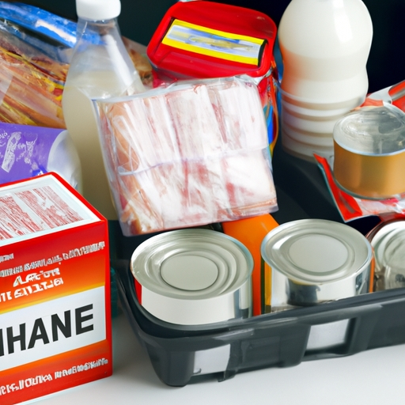
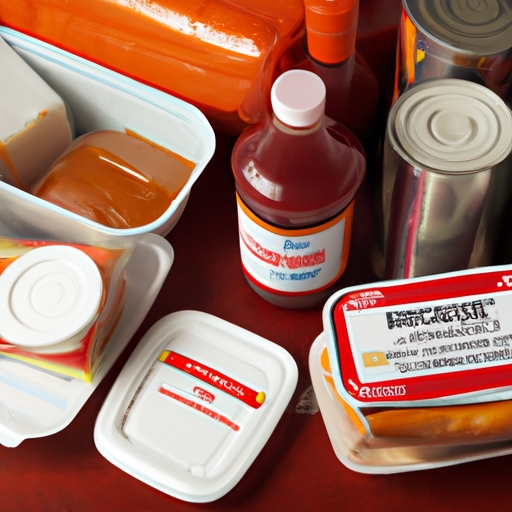
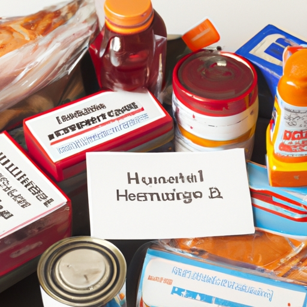

Safety Tips for Handling and Eating Emergency Foods During a Hurricane

It's important to follow safety tips for both handling and eating emergency food items during a hurricane.. First of all, always check the expiration date on all canned goods and other packaged foods to ensure they haven't gone bad.
Posted by on 2023-08-18
How to Store and Protect Non-Perishable Foods in an Emergency Situation
Storing and protecting non-perishable foods in an emergency situation is essential to ensure that they will last.. It's important (not crucial) to understand the best way to store and protect these items so you can have access to them during difficult times.
Posted by on 2023-08-18
Best Practices for Meeting Special Dietary Needs During a Hurricane

Hurricanes can be devastating, and meeting special dietary needs during such an emergency can be especially challenging.. It is important to (develop) emergency preparedness plans that are specific to each individual's unique diet.
Posted by on 2023-08-18
The Impact of Climate Change on the Availability of Emergency Food Supplies
Climate change has a tremendous (impact) on the availability of emergency food supplies!. According to research, rising temperatures and extreme weather events are reducing crop yields and raising food prices.
Posted by on 2023-08-18
The Role of Government Agencies in Providing Updated Information About Hurricane Emergencies
The role of government agencies in providing updated information about hurricane emergencies is critical for the safety and well-being of citizens.. They are responsible for informing people about dangerous storms, evacuation routes, and disaster relief. (Additionally,) they must be able to respond quickly and accurately to the ever-changing conditions of a hurricane emergency.
Government agencies use a variety of methods to keep citizens informed during hurricanes, such as television, radio, social media, and even door-to-door notifications.
Posted by on 2023-08-18
How Technology Can Help to Track and Distribute Emergency Food Supplies During a Crisis
In conclusion, technology is a valuable asset in helping to track and distribute emergency food supplies during a crisis.. It can provide real-time data on where the food is needed most, as well as allowing for efficient transportation of goods from one place to another.
Posted by on 2023-08-18